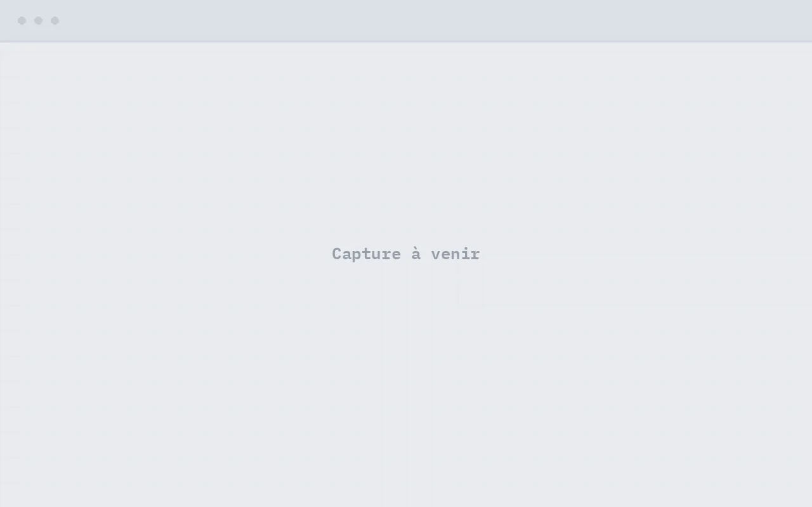

Diagnostic de maturité IA & données
État des lieux des cas d’usage, des données et des contraintes réglementaires ; feuille de route chiffrée.
Conseil en IA générative souveraine
HK CONSEILS aide les PME à concevoir et déployer une IA générative souveraine : LLM auto-hébergés, données qui ne quittent jamais votre infrastructure, décisions fondées sur la mesure. Chaque recommandation — modèle, GPU, dimensionnement — est d’abord testée sur notre propre plateforme d’inférence de production.
Offre
Du cadrage à l’autonomie de vos équipes, chaque étape s’appuie sur des mesures faites en conditions réelles.
État des lieux des cas d’usage, des données et des contraintes réglementaires ; feuille de route chiffrée.
LLM, RAG, génération d’images et de vidéo auto-hébergés, on-premise ou cloud européen ; sécurité LLM par conception.
Montée en autonomie des équipes ; fondateur enseignant Cloud & virtualisation à l’ESGI (Bachelor → M2).
Références
Santé
Pour une TPE du secteur des dispositifs médicaux capillaires : reprise en pleine propriété d’un actif SaaS tiers (code, données, hébergement), annuaire national de 1 485 établissements et module d’essayage par IA générative auto-hébergé.
Privacy by design pour données de santé : photos traitées en mémoire uniquement, jamais écrites sur disque, aucune donnée hors de l’infrastructure. En production depuis juillet 2026, validation écrite de la cliente.
Édition

Application web de correction éditoriale, inférence 100 % locale : aucun manuscrit ne transite par un service tiers. Pipeline hybride — correction grammaticale déterministe, puis passes IA sur la structure et le style — avec charte éditoriale configurable. Livré en mars 2026, utilisé par le client (usage tracé mars-juin 2026). Démonstration sur demande.
Recherche & développement
OpenClaw, plateforme multi-agents souveraine développée en interne depuis février 2026 : 13 agents spécialisés orchestrés sur inférence 100 % locale, garde-fous déterministes exercés en conditions réelles, économie validée d’environ 16 000 $/an par rapport aux API. L’assistant Editos en est un produit dérivé.
Plateforme
HK CONSEILS opère sa propre infrastructure d’inférence IA de production : plusieurs hyperviseurs, 4 GPU, passerelle LLM unifiée, sauvegardes testées par restaurations réelles, Infrastructure as Code. Les prérequis constructeurs y sont vérifiés empiriquement.
À propos
HK CONSEILS est un cabinet de conseil en intelligence artificielle générative fondé en janvier 2026 par Hemerson Koffi, basé à Saint-Priest, dans la métropole de Lyon (Auvergne-Rhône-Alpes). Il accompagne les PME et TPE françaises dans l’adoption d’une IA souveraine : modèles de langage auto-hébergés, génération d’images et de vidéo, RAG et automatisation, sans transfert de données vers des clouds non européens. Son fondateur cumule 16 ans d’expérience en infrastructures IT, dont 6 en prestation client, et enseigne le cloud et la virtualisation à l’ESGI (Paris).
FAQ
Oui. Des modèles open-weight (Qwen, Mistral, Llama) s'exécutent sur des serveurs que l'entreprise contrôle, on-premise ou chez un hébergeur européen. Les documents ne quittent jamais l'infrastructure. C'est l'approche déployée par HK CONSEILS pour ses clients : un assistant éditorial traitant des manuscrits confidentiels et une plateforme santé fonctionnent ainsi en production, sans aucun appel à une API américaine.
Un serveur d'inférence capable de servir un modèle de classe 27-35 milliards de paramètres se construit à partir de quelques milliers d'euros de matériel (GPU d'occasion inclus), pour un coût marginal par requête quasi nul ensuite. Le bon dimensionnement dépend du cas d'usage : HK CONSEILS mesure débit, latence et coût par requête sur sa propre plateforme avant toute recommandation d'achat.
C'est même sa raison d'être : les données restent dans l'Union européenne, sous le contrôle exclusif de l'entreprise, sans transfert vers des sous-traitants américains soumis au Cloud Act. La conformité exige aussi de bonnes pratiques applicatives — minimisation des données, traitement en mémoire des contenus sensibles, journalisation des accès — que HK CONSEILS intègre dès la conception.
Les plus rentables sont ceux qui traitent du texte ou des images en volume : relecture et mise en conformité de documents, assistants métier sur base documentaire interne (RAG), génération de visuels produits, automatisation de processus répétitifs. HK CONSEILS commence par un diagnostic des cas d'usage et des données disponibles avant tout investissement technique.
Non, à condition que le déploiement soit industrialisé : sauvegardes automatiques, supervision, procédures documentées et transfert de compétences font partie de la prestation. L'objectif de HK CONSEILS est l'autonomie du client — la formation des équipes est l'une de ses trois offres, assurée par un enseignant en cloud et virtualisation.
Contact
Décrivez votre besoin en quelques lignes : vous recevrez une réponse argumentée, pas une plaquette.